UE4 渲染系统设计浅析 - 4.22 Release
本文旨在分析 UE4 中的渲染系统设计理念。
本文仅涉及与图形渲染最相关的理念。
还未完成...待填坑
我们将从传统图形渲染流程开始，回顾渲染的基本流程；之后，由于渲染系统中的一些设计理念与现代图形 API 的强关联，我们先从 Vulkan、D3D12 新特性切入，再讲述 UE4 中设计与这些新特性的对应关系；而后针对游戏引擎，探讨渲染系统还需要引入什么设计；最终我们将串起这些概念，总结 UE4 渲染系统设计动机及模式。
现有的与渲染相关的优质资料集中在以下几个方面：
- 如何添加 RenderPass 如何为 UE4 添加全局着色器（Global Shaders）、网格体绘制管道 | 虚幻引擎文档
- 如何添加 Shading Model（注：4.22 重构网格体绘制后，系列中关于 DrawPolicy 的描述不再有参考价值）Unreal Engine 4 Rendering Part 1~6
- 基本概念的阐述 图形编程 | 虚幻引擎文档
- RenderPass 流程分析
- 渲染系统概览（注：作者将整个系统代码流程扒下来，非常直观，不过同样需注意 4.22 版本重构导致的变动）UE4 Render System Sheet（UE4渲染系统概览）
他们聚焦于其中某一个子功能，在渲染系统设计动机方面的讨论较少。
接下来将从渲染系统演化、模式、要素描述引擎渲染子系统设计思想。
基本图形渲染流程
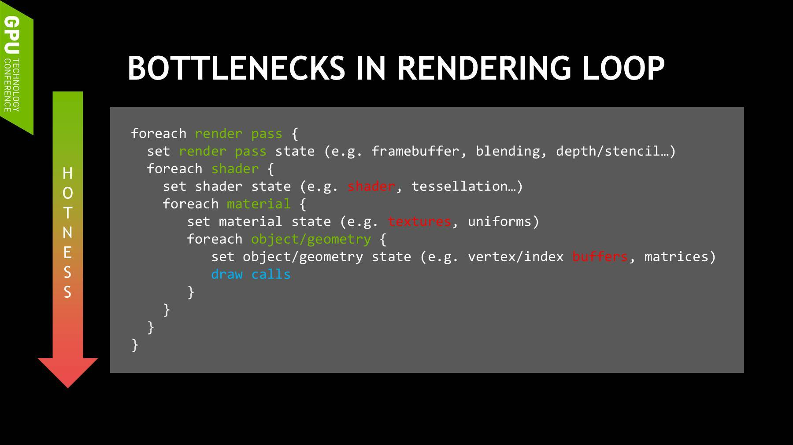
以下是 UE4 渲染系统中与上述流程对应的概念：
- RenderPass：BasePass、Decal、Transparency、PostProcess...
- RenderState：SetDepthStencilState、SetBlendState...
- Shader：Vertex Shader、Geometry Shader、Pixel Shader...
- Material：Texture、Uniform
- Geometry/Object State：Vertex Buffers、Index Buffers
- DrawCall：RHI
上图是一段比较典型的图形应用程序中的主循环伪代码。UE4 使用的也是这样的流程，如：UE4 FDeferredShadingSceneRenderer::Render 中，调用了 RenderBasePass、RenderShadowDepthMaps、RenderVelocities 等 RenderPass；而 BasePass 渲染时，首先设定 RenderState；再设定 BasePassVertexShader、BasePassPixelShader；然后对 Shader 参数进行绑定，含各种材质、Uniform 的绑定；之后通过绑定 Index Buffer、Vertex Buffer，设定 GPU 渲染顶点数据；最终通过 RHI 间接调用 Vulkan/D3D/OGL，提交绘制命令。
现代图形 API：UE4 渲染系统设计来源之一
UE4 渲染系统一方面会随着新图形 API 的出现，在系统底层封装成图形接口无关的 API，另一方面会借鉴现代图形 API 设计理念（如，为多线程设计的组件），将其融入自身的设计哲学中。
本章节来回顾现代图形学 API 中的几个概念。这些概念被 UE4 延用，成为平台无关的渲染子系统的一部分，对子系统封装的众多 API 提供一致的功能，用于减轻游戏客户端 CPU 负担。
现代图形 API 专注于 CPU 资源利用率上的改进
现代图形 API 渲染流程上与基本图形管线并无二致，仍然是 RenderPass、设置 RenderState、着色器、绑定数据、调用DrawCall。
现代图形 API 设计核心在于降低 CPU 开销，最大限度利用 CPU 资源（多核心），受益的应用类型为 CPU 端能够多线程并行化的应用。
其中最重要的思想如下：
- 更依赖于程序自身的认知，让程序有更多的权限和责任自主的处理调度和优化，而不依赖于驱动尝试在后台的优化
- 多线程友好，让程序尽可能的利用所有CPU计算资源从而提高性能
- 强调复用，从而减少开销
UE4 渲染系统中大量采用现代图形 API 理念，在后一章节将会提到的 UE4 中的 CommandList、PSO、PSO Cache 等众多组件都来源于此，即 UE4 的 RHI 抽象层级更偏向现代图形 API，同时，RHI 内部完成了各类图形 API 的适配工作。
我们将重点探讨 Vulkan 中的 Command Buffer、PSO，他们在其他现代图形 API 中也能找到对应概念。
Command Buffer 用于记录 Commands
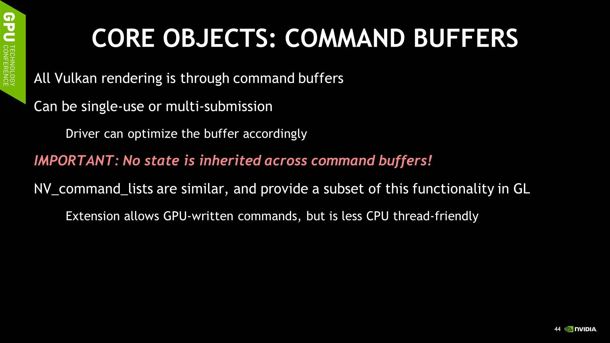
- Command Buffer 包含了一次 Draw 需要的所有状态（State、Binding、Draw）
应用程序控制优化
现代图形 API 将应用同步控制权交还到开发者手上，UE4 中高层级概念 RenderGraph 为图形开发者自动计算依赖、插入 Fence。
对于传统API，Command Buffer 和 Driver 概念绑定在一起，对于 D3D12，Command Buffer 独立于 Driver 层级，提供缓存命令的功能，它能够在适当的时机将缓存的命令一起发送给 GPU，缓存能减少调用 Driver 带来的 CPU 由用户态转换到内核态带来的性能开销
感兴趣看[文刀秋二关于 Vulkan 理念]的文章，本节是简短转述。
UE4 渲染子系统设计理念
Note
渲染系统代码主要放在 Source\Runtime\RenderCore、Source\Runtime\Renderer、Source\Runtime\RHI 文件夹下。
本章将讲述 UE4 渲染子系统的设计理念。其中，既包含上一章节中提到的现代图形 API 的设计，也包含了作为游戏引擎子系统需要考虑到的设计。
接下来分别讲述以下几个概念
首先回顾渲染的整体流程：
- 首先看基本数据结构，网格体表示、视角和摄像机、材质、数据（几何数据、Uniform 和 Parameter）
- 跟踪网格体绘制流程
- 跟踪 Renderer
在这些流程背后，众多基础类共同为我们提供系统基本功能。
我们将剥离掉游戏引擎渲染子系统（业务逻辑）这一标签，聚焦于渲染系统在图形渲染方面设计动机：
对于图形渲染最基本的是 Pipeline，粗略对应上 RenderPass 概念，Pipeline 又包含了 Shader、Binding、Vertex、Issue DrawCall 等概念。
对应现代图形 API 的设计： 1. CommandList 2. PSO 3. PSO Cache 4. Render Graph 计算依赖（自主控制）
渲染系统自身的设计：
- 平台无关
- 缓存
- Permutation
流程一览
渲染相关类
渲染主流程概览（注：作者将整个系统代码流程扒下来，非常直观，不过同样需注意 4.22 版本重构导致的变动）UE4 Render System Sheet（UE4渲染系统概览）
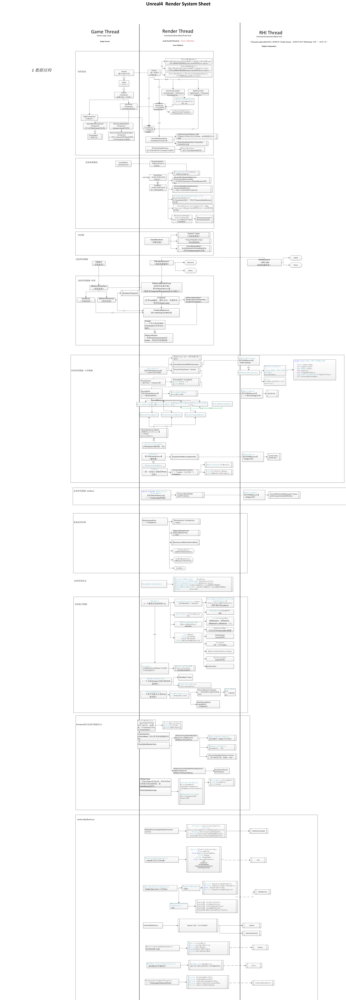
Renderer 流程
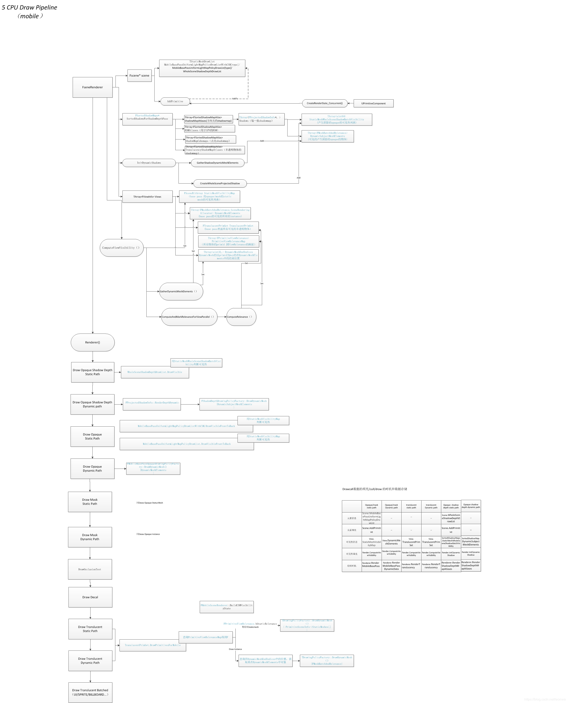
游戏线程、渲染线程
渲染线程主要执行内容在 RenderingThreadMain 中，游戏线程借助 EQUEUE_XX_COMMNAD 系列宏，向渲染线程添加渲染任务，渲染线程不断提取任务。
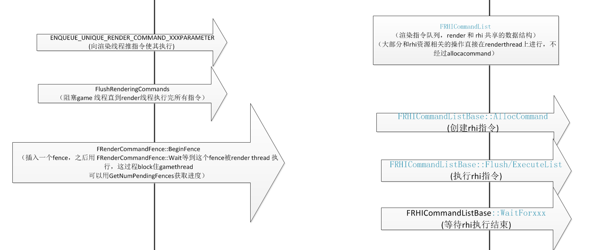
网格体绘制流程
后处理流程
Pipeline State Object
包含 Pipeline 所需所有状态，与 CommandList 配合使用
FRHICommandList
消除上下文，每个 CommandList 包含完整的渲染所需状态
RHI Command List definitions for queueing up & executing later.
Render Graph 资源控制
UE4 4.22 版本中添加了 Render Graph 提供了高层抽象，管理 Pass。
结构化渲染流程，用来管理 Render Pass
GPU Barrier：可以使用 Render Graph 这类技术来自动发现 Dependency 并且来最大化优化 Barriers
其设计理念参考寒霜引擎中的 FrameGraph。
[GDC17] FrameGraph Extensible Rendering Architecture in Frostbite
通过资源之间的依赖关系将它们组装成Task Graph。在编译Task Graph生成GPU指令的时候，系统自动添加所有必要的同步信号、临界段
It's a high level pipeline describing the different stages of rendering a frame. Similar to what Frostbite has in Battlefront games. Basically it should enable developers to customize rendering more easily.
The render graph is similar to the FrameGraph in Frostbite engine, and its a way to connect different rendering passes, leaving the render-graph system to figure out the memory dependencies and the framebuffers. Once finished, it will allow for improved customization of the renderer, and even rendering plugins.
为后续自定义渲染器做准备。
PostProcessing Graph
Scene pass order and dependency system.
跨平台，跨 API 调用
由于UE4 渲染系统面对的是跨平台、封装多种图形 API，渲染系统层面上难以统一实现所有特性（难以将现代图形 API 特性直接赋予传统图形 API）。
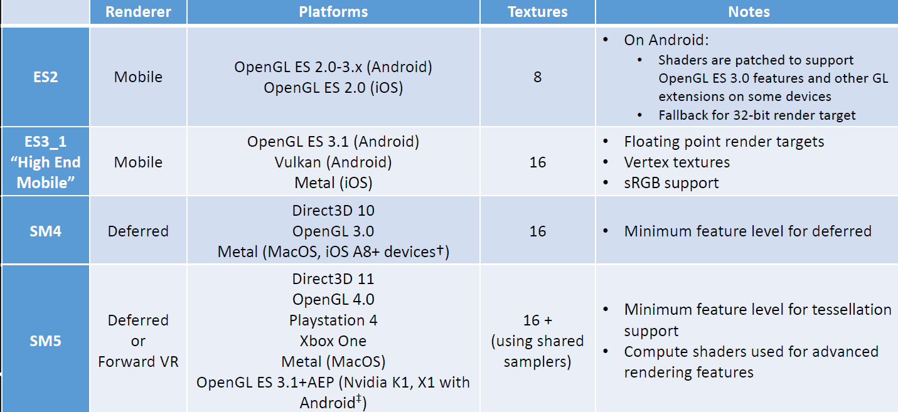
游戏引擎打包出的游戏应用需要在多平台（PC，移动端，PS4，Switch，XBOX）下使用。 不同平台计算能力不同，使用图形接口不同，于是分化出了 Feature Level、Renderer、RHI 等概念。
Feature Level：根据图形 API 的特性分出了 SM5、SM4、ES3_1、ES_2 几种特性集合
RHI：图形 API 之上的一个薄层
与PC平台不同，移动平台硬件架构不同、散热要求高、运算能力低、支持图形 API 不同。
RHI 让我们能写平台无关的图形渲染代码，RHI 为我们自动将其转换为特定平台特定API的代码。意味着RHI及RHI之上的渲染线程承担了这部分功能，将以上提到的多线程、复用、应用程序优化自行实现一遍。
- Feature Level 决定了使用哪种 Renderer
- 设备显卡支持的图形 API 决定了 Feature Level
- 高层级图形 API 可以使用低 Feature Level
图形API是所有游戏引擎都必须打交道的部分，游戏引擎依赖平台的图形API实现游戏画面的绘制。一般来说，游戏引擎所运行的平台都会具有独立的图形处理单元（GPU）和独立的显存（VDRAM），这部分资源需要使用平台特定的API去访问。不同的平台提供不同的图形API，如Windows平台主流的图形API就包括Direct3D 11、Direct3D 12、OpenGL、Vulkan等、MacOS平台只有Metal和OpenGL两种、Linux和Android平台使用OpenGL和Vulkan、iOS平台使用OpenGL和Metal、Nintendo 3DS使用OpenGL的一个子集，而Playstation 4、Nintendo Switch等游戏主机则提供自己专有的图形API。当我们设计一款跨平台游戏引擎的时候，我们自然不希望在每个平台上都用它提供的专有API重新编写一遍图形相关的算法，因此我们会设计图形API抽象层，它提供了大部分平台均具有的图形相关功能，并且在不同的平台上映射到不同的专有API上，即使用不同的专有图形API实现。
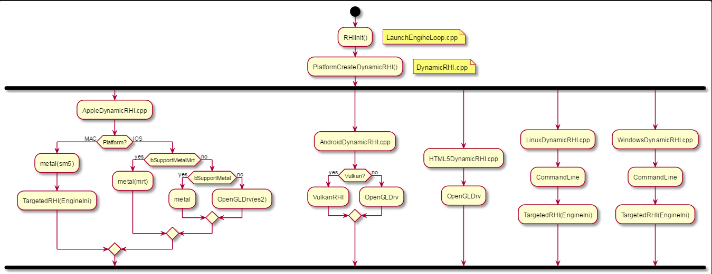
| Name | Description |
|---|---|
| ES2 | Feature level defined by the core capabilities of OpenGL ES2. |
| ES3_1 | Feature level defined by the core capabilities of OpenGL ES3.1 & Metal/Vulkan. |
| SM4 | Feature level defined by the capabilities of DX10 Shader Model 4. |
| SM5 | Feature level defined by the capabilities of DX11 Shader Model 5. |
The RHI's feature level indicates what level of support can be relied upon. Note: these are named after graphics API's like ES2 but a feature level can be used with a different API (eg ERHIFeatureLevel::ES2 on D3D11) As long as the graphics API supports all the features of the feature level (eg no ERHIFeatureLevel::SM5 on OpenGL ES2) ERHIFeatureLevel::Type
Q：MacOS 上使用的是 Metal API，Feature Level 为 SM5？ 什么机制决定了最终选则？
材质、顶点、Pass 代码解耦
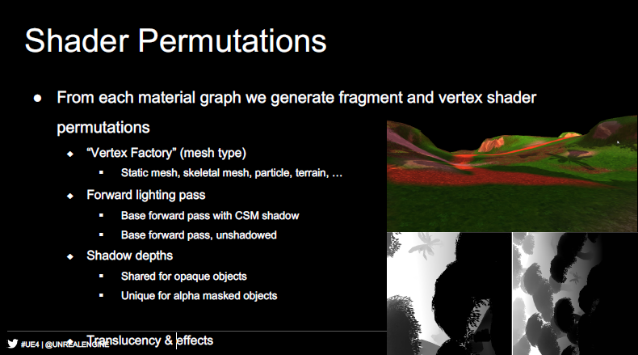
每次在编辑器中修改、添加材质的时候，我们会看到至少上百个着色器的编译。上图解释了大量着色器的来源——Material 多种 Vertex Factory 组合，并与着色器中不同的宏定义进行组合，导致一次 Material 修改产生成大量 Shader，等待编译。
我们查看 UE4 源码中的 Pass 对应的 Shader 文件，其头部包含了
#include "/Engine/Generated/Material.ush" #include "/Engine/Generated/VertexFactory.ush"
这使得 RenderPass 相关的代码从顶点类型、材质中抽离出来。
并且，Pass 的 usf 代码中包含了众多宏定义，如：
DIRECTIONAL_LIGHT_CSM
每当有新的材质添加进游戏中时，如 BasePassPixelShader.usf 文件就需要处理 VertexFactory、RenderPass 及其中宏定义的组合，产生可用的 Shader。
每新添一种材质，编辑器运行时为我们自动编译所有可能的排列（Permutaiton），FShaderCodeLibrary 为我们提供缓存功能。
ShaderCache 在 4.22 中被 PSO Cache 取代。
来源：UE4 for Mobile | Developing High-end Mobile Games
利用 PSO Cache 改善载入时性能
PSO Cache 是 4.21 出现的，用于替代以前的 FShaderCache。
实际游戏过程中，我们并不会用到着色器的所有 Permutation，只会从中挑选出一个子集，PSO Cache 正为缓存了这个子集，游戏发布时，只需将小部分的缓存打包到客户端上。
PSO Cache 有效减少游戏载入阶段着色器编译的时长。
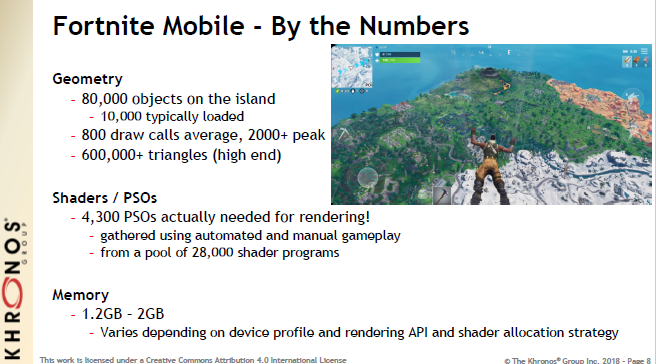
例如，在移动端堡垒之夜中，28,000 个 Shader Programs 中，Profile 到其中常用 4,000 个常用项。
Note
移动端使用过程中会遇到 Shader 在显存中占用过大，解决方案是使用 LRU 策略。
复用 Draw Command 资源
4.22 中，渲染系统对Mesh绘制部分进行了完全的重构，重构后的流程可以缓存 DrawCommand，其次 RHI 可以根据 DrawCommand 实现 DrawCall Merge 优化。
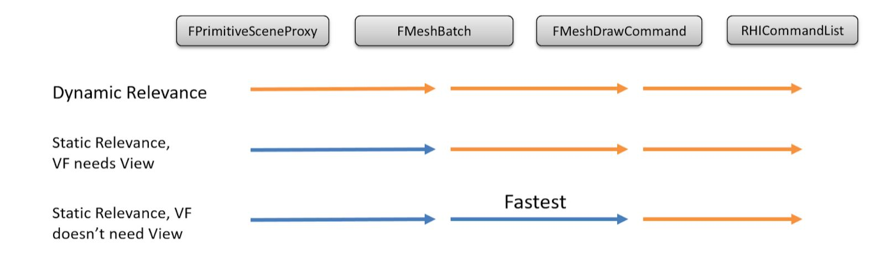 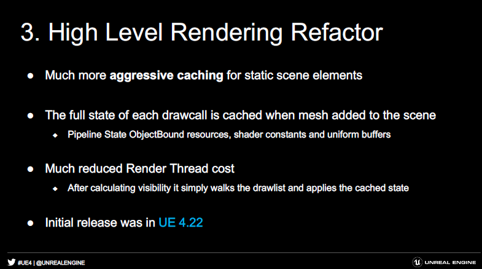
虚幻4渲染编程(Shader篇)【第十卷：绘制策略】 虚幻4渲染编程(Shader篇)【第十二卷：MeshDrawPipline】 UE4.22渲染数据管线重构和动态instancing
其他特性
RHI 线程
减少渲染线程耗时
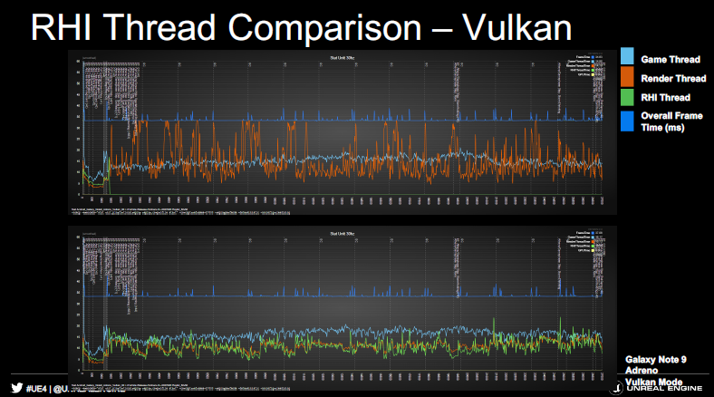
合并 RenderPass 减少移动端开销
4.22 新特性，避免 RenderTarget 不必要的 Load-Store。 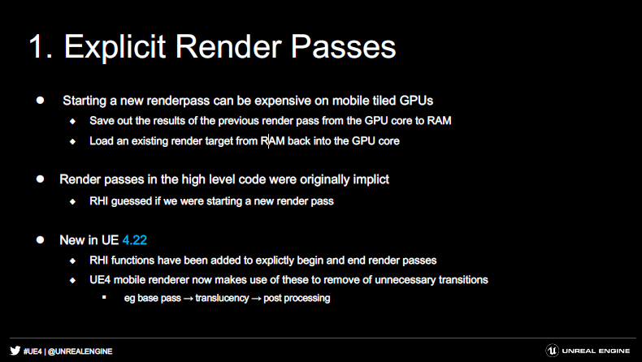
参考
Vulkan - 高性能渲染 Command Buffer，不过这篇不太好理解
Unreal Open Day 技术PPT for Mobile
....